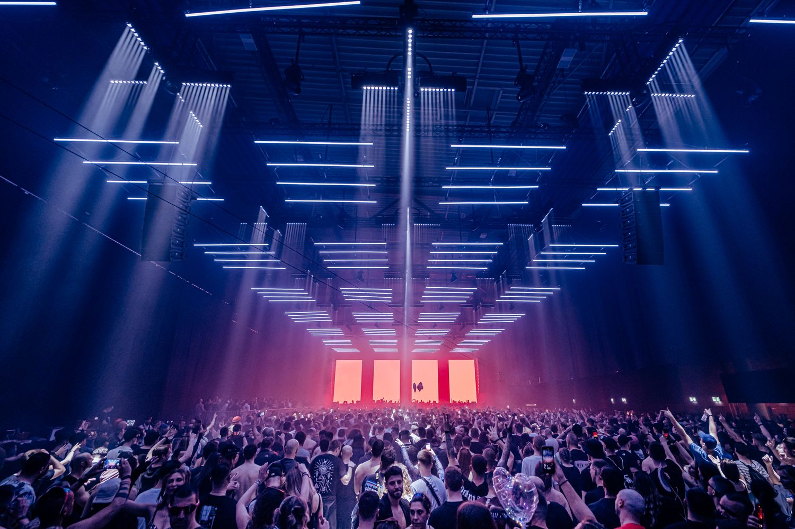
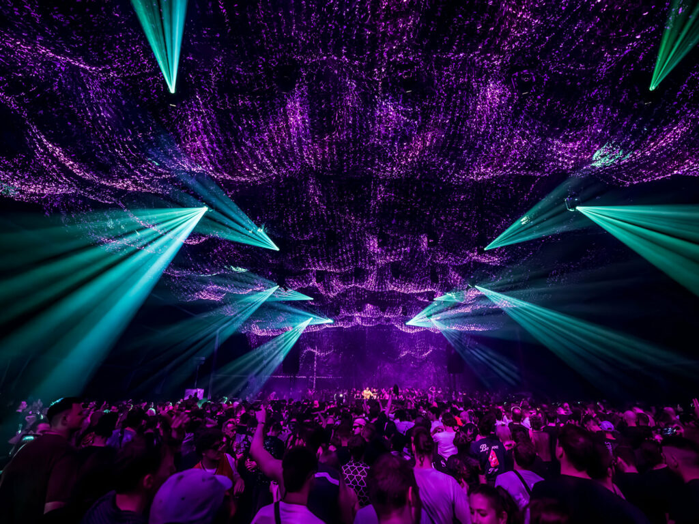

Festival Time Warp
El festival de música electrónica que se destaca por tener un enfoque purista en la pista de baile y una producción audiovisual inversiva y de nivel mundial.
Time Warp tuvo su primera edición el 26 de noviembre de 1994 en la ciudad de Ludwigshafen, Alemania. Fue concebido por Steffen Charles y Cosmopop con un propósito claro: contrarrestar la comercialización de la música electrónica de la época y ofrecer un espacio puro para el techno underground. Aunque comenzó en un antiguo molino de granos, para el año 2000 el festival encontró su hogar definitivo en el Maimarkthalle en Mannheim, Alemania, un complejo industrial que se convirtió en la catedral del festival.

Géneros
Time Warp abarca una amplia gama de géneros dentro de la música electrónica, desde el techno y el house hasta el trance y el electro. La diversidad de estilos asegura que haya algo para todos los gustos, y los asistentes pueden disfrutar de una variedad de sonidos a lo largo del festival.
La programación del festival se organiza cuidadosamente para ofrecer una experiencia musical equilibrada, permitiendo a los asistentes explorar diferentes géneros y descubrir nuevos artistas. Esta diversidad es una de las razones por las que Time Warp ha mantenido su relevancia y atractivo a lo largo de los años.
Techno
El techno es uno de los géneros principales en Time Warp, caracterizado por sus ritmos repetitivos y su enfoque en la producción electrónica. Los artistas de techno suelen utilizar sintetizadores, cajas de ritmos y efectos para crear paisajes sonoros hipnóticos que invitan a la danza. Djs como Alarico, Andy Martin Anfisa Letyago, Chlär y el Legendario Sven Väth nos estaran demostrando de que esta hecho el género
House
El house es otro género destacado en el festival, conocido por sus grooves contagiosos y su influencia en la cultura de clubes. Los DJs de house suelen mezclar vocales, líneas de bajo y percusiones para crear un ambiente festivo y enérgico que mantiene a la multitud en movimiento. The Blessed Madona, Maceo Plex, Beltran, Desiree, Ede y Paramida van a ser los representantes de esrte sub genero.
Trance
El trance es un género que se caracteriza por sus melodías emotivas y sus construcciones progresivas. En Time Warp, los sets de trance suelen llevar a los asistentes a un viaje musical, con momentos de euforia y catarsis que crean una experiencia emocionalmente intensa. Para esta ediciión Cristobal Pesce e Indira Paganotto nos presentarán sus mejores sets representando al Trance.
Electro
El electro combina elementos del funk, el hip-hop y la música electrónica, creando un sonido distintivo que ha influido en la evolución de la música electrónica. Los artistas de electro en Time Warp suelen incorporar sintetizadores y efectos para crear un ambiente futurista y experimental que desafía las expectativas de los asistentes. Para este genero contaremos con varios BTB como de Dj Stingray y Helena Hauff o Clara Cuvé con SPFDJ.
